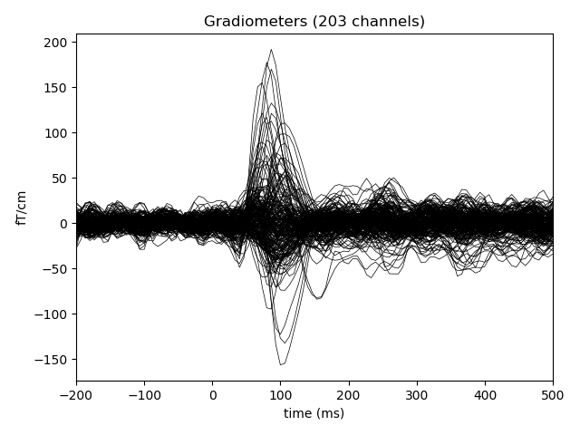

This example demonstrates how to connect to an MNE Real-time server using the RtClient and use it together with RtEpochs to compute evoked responses using moving averages.
Note: The MNE Real-time server (mne_rt_server), which is part of mne-cpp, has to be running on the same computer.
Out:
Successfully extracted to: [u'/home/ubuntu/mne_data/MNE-sample-data']
Opening raw data file /home/ubuntu/mne_data/MNE-sample-data/MEG/sample/sample_audvis_filt-0-40_raw.fif...
Read a total of 4 projection items:
PCA-v1 (1 x 102) idle
PCA-v2 (1 x 102) idle
PCA-v3 (1 x 102) idle
Average EEG reference (1 x 60) idle
Range : 6450 ... 48149 = 42.956 ... 320.665 secs
Ready.
Current compensation grade : 0
Reading 0 ... 41699 = 0.000 ... 277.709 secs...
4 projection items activated
5 events found
Events id: [1 2 3 4]
15 events found
Events id: [1 2 3 4]
20 events found
Events id: [ 1 2 3 4 5 32]
20 events found
Events id: [ 1 2 3 4 5 32]
20 events found
Events id: [ 1 2 3 4 5 32]
20 events found
Events id: [ 1 2 3 4 5 32]
21 events found
Events id: [ 1 2 3 4 5 32]
21 events found
Events id: [ 1 2 3 4 5 32]
20 events found
Events id: [ 1 2 3 4 5 32]
20 events found
Events id: [ 1 2 3 4 5 32]
20 events found
Events id: [ 1 2 3 4 5 32]
20 events found
Events id: [ 1 2 3 4 5 32]
21 events found
Events id: [ 1 2 3 4 5 32]
20 events found
Events id: [ 1 2 3 4 5 32]
20 events found
Events id: [ 1 2 3 4 5 32]
20 events found
Events id: [ 1 2 3 4 5 32]
20 events found
Events id: [ 1 2 3 4 5 32]
20 events found
Events id: [ 1 2 3 4 5 32]
19 events found
Events id: [ 1 2 3 4 5 32]
20 events found
Events id: [ 1 2 3 4 5 32]
21 events found
Events id: [ 1 2 3 4 5 32]
20 events found
Events id: [ 1 2 3 4 5 32]
Just got epoch 1
Just got epoch 2
Just got epoch 3
Just got epoch 4
Just got epoch 5
Just got epoch 6
Just got epoch 7
Just got epoch 8
Just got epoch 9
Just got epoch 10
Just got epoch 11
Just got epoch 12
Just got epoch 13
Just got epoch 14
Just got epoch 15
Just got epoch 16
Just got epoch 17
Just got epoch 18
Just got epoch 19
Just got epoch 20
Just got epoch 21
Just got epoch 22
Just got epoch 23
Just got epoch 24
Just got epoch 25
Just got epoch 26
Just got epoch 27
Just got epoch 28
Just got epoch 29
Just got epoch 30
Just got epoch 31
Just got epoch 32
Just got epoch 33
Just got epoch 34
Just got epoch 35
Waiting for epoch 36
Time of 2.0 seconds exceeded.
# Authors: Martin Luessi <mluessi@nmr.mgh.harvard.edu>
# Mainak Jas <mainak@neuro.hut.fi>
#
# License: BSD (3-clause)
import matplotlib.pyplot as plt
import mne
from mne.datasets import sample
from mne.realtime import RtEpochs, MockRtClient
print(__doc__)
# Fiff file to simulate the realtime client
data_path = sample.data_path()
raw_fname = data_path + '/MEG/sample/sample_audvis_filt-0-40_raw.fif'
raw = mne.io.read_raw_fif(raw_fname, preload=True)
# select gradiometers
picks = mne.pick_types(raw.info, meg='grad', eeg=False, eog=True,
stim=True, exclude=raw.info['bads'])
# select the left-auditory condition
event_id, tmin, tmax = 1, -0.2, 0.5
# create the mock-client object
rt_client = MockRtClient(raw)
# create the real-time epochs object
rt_epochs = RtEpochs(rt_client, event_id, tmin, tmax, picks=picks,
decim=1, reject=dict(grad=4000e-13, eog=150e-6))
# start the acquisition
rt_epochs.start()
# send raw buffers
rt_client.send_data(rt_epochs, picks, tmin=0, tmax=150, buffer_size=1000)
for ii, ev in enumerate(rt_epochs.iter_evoked()):
print("Just got epoch %d" % (ii + 1))
ev.pick_types(meg=True, eog=False) # leave out the eog channel
if ii == 0:
evoked = ev
else:
evoked = mne.combine_evoked([evoked, ev], weights='nave')
plt.clf() # clear canvas
evoked.plot(axes=plt.gca()) # plot on current figure
plt.pause(0.05)
Total running time of the script: ( 0 minutes 27.955 seconds)